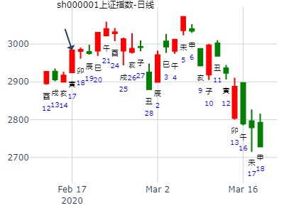

|
主帖标题: 1-6上证指数 《估计是当天行情》 3083.79 出生：2020 年 性别：女 占事：没填 公历起卦时间：2020年1月6日9时15分 (手工指定) 干支：己亥年 丁丑月 戊申日 丁巳时 （日空：寅卯） 神煞：驿马－寅 桃花－酉 日禄－巳 贵人－丑，未 坤宫：水地比 (归魂) 乾宫：风地观 六神 伏神 本 卦 变 卦 朱雀 妻财戊子水 ▅▅ ▅▅ 应 ╳→ 官鬼辛卯木 ▅▅▅▅▅ 青龙 兄弟戊戌土 ▅▅▅▅▅ 父母辛巳火 ▅▅▅▅▅ 玄武 子孙戊申金 ▅▅ ▅▅ 兄弟辛未土 ▅▅ ▅▅ 世 白虎 官鬼乙卯木 ▅▅ ▅▅ 世 官鬼乙卯木 ▅▅ ▅▅ 腾蛇 父母乙巳火 ▅▅ ▅▅ 父母乙巳火 ▅▅ ▅▅ 勾陈 兄弟乙未土 ▅▅ ▅▅ 兄弟乙未土 ▅▅ ▅▅ 应 |
| 主帖标题: 1月11至1月15日大盘预测(日测) 明天周五涨跌 公历时间：2021年1月14日16时19分 干 支：庚子年 己丑月 壬戌日 戊申时 旬 空：辰巳 午未 子丑 寅卯 神 煞：驿马─申 桃花─卯 日禄─亥 贵人─巳，卯 坤宫：水地比（归魂） 乾宫：风地观 六神 【本 卦】 【变 卦】 白虎 ▄▄ ▄▄ 妻财戊子水 应× ▄▄▄▄▄ 官鬼辛卯木 螣蛇 ▄▄▄▄▄ 兄弟戊戌土 ▄▄▄▄▄ 父母辛巳火 勾陈 ▄▄ ▄▄ 子孙戊申金 ▄▄ ▄▄ 兄弟辛未土 世 朱雀 ▄▄ ▄▄ 官鬼乙卯木 世 ▄▄ ▄▄ 官鬼乙卯木 青龙 ▄▄ ▄▄ 父母乙巳火 ▄▄ ▄▄ 父母乙巳火 玄武 ▄▄ ▄▄ 兄弟乙未土 ▄▄ ▄▄ 兄弟乙未土 应 |
| 主帖标题: 2022年2月大盘涨跌卦 占事：2022年2月大盘涨跌？ 公历起卦时间：2022年1月28日16时33分 (手工指定) 干支：辛丑年 辛丑月 辛巳日 丙申时 （日空：申酉） 神煞：驿马－亥 桃花－午 日禄－酉 贵人－寅，午 坤宫：水地比 (归魂) 乾宫：风地观 六神 伏神 本 卦 变 卦 螣蛇 妻财戊子水 ▅▅ ▅▅ 应 ╳→ 官鬼辛卯木 ▅▅▅▅▅ 勾陈 兄弟戊戌土 ▅▅▅▅▅ 父母辛巳火 ▅▅▅▅▅ 朱雀 子孙戊申金 ▅▅ ▅▅ 兄弟辛未土 ▅▅ ▅▅ 世 青龙 官鬼乙卯木 ▅▅ ▅▅ 世 官鬼乙卯木 ▅▅ ▅▅ 玄武 父母乙巳火 ▅▅ ▅▅ 父母乙巳火 ▅▅ ▅▅ 白虎 兄弟乙未土 ▅▅ ▅▅ 兄弟乙未土 ▅▅ ▅▅ 应 |
| 风生水起 占事：三月大盘 起卦方式：手动摇卦 公历时间：2016年2月27日10时46分 干 支：丙申年 庚寅月 己卯日 己巳时 旬 空：辰巳 午未 申酉 戌亥 坤宫：水地比（归魂） 乾宫：风地观 六神 【本 卦】 【变 卦】 勾陈 ▄▄ ▄▄ 妻财戊子水 应× ▄▄▄▄▄ 官鬼辛卯木 朱雀 ▄▄▄▄▄ 兄弟戊戌土 ▄▄▄▄▄ 父母辛巳火 青龙 ▄▄ ▄▄ 子孙戊申金 ▄▄ ▄▄ 兄弟辛未土 世 玄武 ▄▄ ▄▄ 官鬼乙卯木 世 ▄▄ ▄▄ 官鬼乙卯木 白虎 ▄▄ ▄▄ 父母乙巳火 ▄▄ ▄▄ 父母乙巳火 螣蛇 ▄▄ ▄▄ 兄弟乙未土 ▄▄ ▄▄ 兄弟乙未土 应 |
| 主帖标题: T-Z-G-D上证指数擂台赛第五场第8局（2020年2月6日）Z方 公历起卦时间：2020年2月6日2时27分 (手工指定) 干支：庚子年 戊寅月 己卯日 乙丑时 （日空：申酉） 神煞：驿马－巳 桃花－子 日禄－午 贵人－子，申 坤宫：水地比 (归魂) 乾宫：风地观 六神 伏神 本 卦 变 卦 勾陈 妻财戊子水 ▅▅ ▅▅ 应 ╳→ 官鬼辛卯木 ▅▅▅▅▅ 朱雀 兄弟戊戌土 ▅▅▅▅▅ 父母辛巳火 ▅▅▅▅▅ 青龙 子孙戊申金 ▅▅ ▅▅ 兄弟辛未土 ▅▅ ▅▅ 世 玄武 官鬼乙卯木 ▅▅ ▅▅ 世 官鬼乙卯木 ▅▅ ▅▅ 白虎 父母乙巳火 ▅▅ ▅▅ 父母乙巳火 ▅▅ ▅▅ 腾蛇 兄弟乙未土 ▅▅ ▅▅ 兄弟乙未土 ▅▅ ▅▅ 应 |
| 主帖标题: T-Z-D上证指数擂台赛第七场第1局（2020年2月17日）Z方 公历起卦时间：2020年2月17日9时1分 (手工指定) 干支：庚子年 戊寅月 庚寅日 辛巳时 （日空：午未） 神煞：驿马－申 桃花－卯 日禄－申 贵人－丑，未 坤宫：水地比 (归魂) 乾宫：风地观 六神 伏神 本 卦 变 卦 螣蛇 妻财戊子水 ▅▅ ▅▅ 应 ╳→ 官鬼辛卯木 ▅▅▅▅▅ 勾陈 兄弟戊戌土 ▅▅▅▅▅ 父母辛巳火 ▅▅▅▅▅ 朱雀 子孙戊申金 ▅▅ ▅▅ 兄弟辛未土 ▅▅ ▅▅ 世 青龙 官鬼乙卯木 ▅▅ ▅▅ 世 官鬼乙卯木 ▅▅ ▅▅ 玄武 父母乙巳火 ▅▅ ▅▅ 父母乙巳火 ▅▅ ▅▅ 白虎 兄弟乙未土 ▅▅ ▅▅ 兄弟乙未土 ▅▅ ▅▅ 应 |
|  |
| 主帖标题: 梅花小孩:下周黄金与大盘诸葛骰子卦汇总 3月2日—7日大盘的走势 2880 手工指定 六爻排盘 驿马-巳 桃花-子 日禄-子 贵人-卯巳 干支：庚子年 戊寅月 癸卯日 己未时 (辰巳空) 坤宫(土):水地比(归魂) 乾宫(金):风地观 六神 伏神 【本 卦】 【变 卦】 白虎 妻财戊子水▅▅ ▅▅应X→官鬼辛卯木▅▅▅▅▅ 螣蛇 兄弟戊戌土▅▅▅▅▅ 父母辛巳火▅▅▅▅▅ 勾陈 子孙戊申金▅▅ ▅▅ 兄弟辛未土▅▅ ▅▅世 朱雀 官鬼乙卯木▅▅ ▅▅世 官鬼乙卯木▅▅ ▅▅ 青龙 父母乙巳火▅▅ ▅▅ 父母乙巳火▅▅ ▅▅ 玄武 兄弟乙未土▅▅ ▅▅ 兄弟乙未土▅▅ ▅▅应 |
| 出生：土金安圆圆 占事：持有的东软集团股票到年底带给我的财运 公历起卦时间：2015年5月14日20时55分 (手工指定) 干支：乙未年 辛巳月 庚寅日 丙戌时 （日空：午未） 坤宫：水地比 (归魂) 乾宫：风地观 六神 伏神 本 卦 变 卦 腾蛇 妻财戊子水 ▅▅ ▅▅ 应 ╳→ 官鬼辛卯木 ▅▅▅▅▅ 勾陈 兄弟戊戌土 ▅▅▅▅▅ 父母辛巳火 ▅▅▅▅▅ 朱雀 子孙戊申金 ▅▅ ▅▅ 兄弟辛未土 ▅▅ ▅▅ 世 青龙 官鬼乙卯木 ▅▅ ▅▅ 世 官鬼乙卯木 ▅▅ ▅▅ 玄武 父母乙巳火 ▅▅ ▅▅ 父母乙巳火 ▅▅ ▅▅ 白虎 兄弟乙未土 ▅▅ ▅▅ 兄弟乙未土 ▅▅ ▅▅ 应 < /td> |
| 主帖标题: 2015年6月大盘涨跌卦 占事：2015年6月大盘涨跌？ 公历起卦时间：2015年5月29日15时11分 (手工指定) 干支：乙未年 辛巳月 乙巳日 甲申时 （日空：寅卯） 神煞：驿马－亥 桃花－午 日禄－卯 贵人－子，申 坤宫：水地比 (归魂) 乾宫：风地观 六神 伏神 本 卦 变 卦 玄武 妻财戊子水 ▅▅ ▅▅ 应 ╳→ 官鬼辛卯木 ▅▅▅▅▅ 白虎 兄弟戊戌土 ▅▅▅▅▅ 父母辛巳火 ▅▅▅▅▅ 腾蛇 子孙戊申金 ▅▅ ▅▅ 兄弟辛未土 ▅▅ ▅▅ 世 勾陈 官鬼乙卯木 ▅▅ ▅▅ 世 官鬼乙卯木 ▅▅ ▅▅ 朱雀 父母乙巳火 ▅▅ ▅▅ 父母乙巳火 ▅▅ ▅▅ 青龙 兄弟乙未土 ▅▅ ▅▅ 兄弟乙未土 ▅▅ ▅▅ 应 经典2015年见顶卦 |
| 占事：2015年6月23-26日大盘走势??起卦方式：手动摇卦 公历时间：2015年6月23日3时23分? 干 支：乙未年 壬午月 庚午日 戊寅时 旬 空：辰巳 申酉 戌亥 申酉 坤宫：水地比（归魂） 乾宫：风地观? 六神?【本? 卦】? 【变? 卦】 螣蛇? ▄▄ ▄▄ 妻财戊子水? 应× ▄▄▄▄▄ 官鬼辛卯木 勾陈 ▄▄▄▄▄ 兄弟戊戌土 ▄▄▄▄▄ 父母辛巳火 朱雀 ▄▄ ▄▄ 子孙戊申金 ▄▄ ▄▄ 兄弟辛未土 世 青龙 ▄▄ ▄▄ 官鬼乙卯木 世 ▄▄ ▄▄ 官鬼乙卯木 玄武 ▄▄ ▄▄ 父母乙巳火 ▄▄ ▄▄ 父母乙巳火 白虎 ▄▄ ▄▄ 兄弟乙未土 ▄▄ ▄▄ 兄弟乙未土 应 |
| |
| 占事：6.10航天长峰何时涨停？ 公历起卦时间：2020年6月10日20时42分 (电脑自动) 干支：庚子年 壬午月 甲申日 甲戌时 （日空：午未） 神煞：驿马－寅 桃花－酉 日禄－寅 贵人－丑，未 坤宫：水地比 (归魂) 乾宫：风地观 六神 伏神 本 卦 变 卦 玄武 妻财戊子水 ▅▅ ▅▅ 应 ╳→ 官鬼辛卯木 ▅▅▅▅▅ 白虎 兄弟戊戌土 ▅▅▅▅▅ 父母辛巳火 ▅▅▅▅▅ 螣蛇 子孙戊申金 ▅▅ ▅▅ 兄弟辛未土 ▅▅ ▅▅ 世 勾陈 官鬼乙卯木 ▅▅ ▅▅ 世 官鬼乙卯木 ▅▅ ▅▅ 朱雀 父母乙巳火 ▅▅ ▅▅ 父母乙巳火 ▅▅ ▅▅ 青龙 兄弟乙未土 ▅▅ ▅▅ 兄弟乙未土 ▅▅ ▅▅ 应 |
| 主帖标题: 000017深中华A明天涨跌 男 占事：000622恒立实业明天涨跌 公历起卦时间：2014年9月18日15时15分 (电脑自动) 干支：甲午年 癸酉月 壬辰日 戊申时 （日空：午未） 神煞：驿马－寅 桃花－酉 日禄－亥 贵人－卯，巳 坤宫：水地比 (归魂) 乾宫：风地观 六神 伏神 本 卦 变 卦 白虎 妻财戊子水 ▅▅ ▅▅ 应 ╳→ 官鬼辛卯木 ▅▅▅▅▅ 腾蛇 兄弟戊戌土 ▅▅▅▅▅ 父母辛巳火 ▅▅▅▅▅ 勾陈 子孙戊申金 ▅▅ ▅▅ 兄弟辛未土 ▅▅ ▅▅ 世 朱雀 官鬼乙卯木 ▅▅ ▅▅ 世 官鬼乙卯木 ▅▅ ▅▅ 青龙 父母乙巳火 ▅▅ ▅▅ 父母乙巳火 ▅▅ ▅▅ 玄武 兄弟乙未土 ▅▅ ▅▅ 兄弟乙未土 ▅▅ ▅▅ 应 |
| 占事：大盘今明二天走势？ 222210 远致当归 公历起卦时间：2015年9月1日9时40分 (手工指定) 干支：乙未年 甲申月 庚辰日 辛巳时 （日空：申酉） 坤宫：水地比 (归魂) 乾宫：风地观 六神 伏神 本 卦 变 卦 腾蛇 妻财戊子水 ▅▅ ▅▅ 应 ╳→ 官鬼辛卯木 ▅▅▅▅▅ 勾陈 兄弟戊戌土 ▅▅▅▅▅ 父母辛巳火 ▅▅▅▅▅ 朱雀 子孙戊申金 ▅▅ ▅▅ 兄弟辛未土 ▅▅ ▅▅ 世 青龙 官鬼乙卯木 ▅▅ ▅▅ 世 官鬼乙卯木 ▅▅ ▅▅ 玄武 父母乙巳火 ▅▅ ▅▅ 父母乙巳火 ▅▅ ▅▅ 白虎 兄弟乙未土 ▅▅ ▅▅ 兄弟乙未土 ▅▅ ▅▅ 应 |
| 主帖标题: 9.21——反弹没完 起卦公历：2022年9月20日12时32分(北京时间) 干支： 壬寅年 己酉月 丙子日 甲午时 [空亡:申、酉] (卦身：丑)丑 主变卦 水地比(坤宫-归魂) 之 风地观(乾宫) 青龙 ━ ━+妻财戊子水 应 ━━━ 官鬼辛卯木 玄武 ━━━ 兄弟戊戌土 ━━━ 父母辛巳火 白虎 ━ ━ 子孙戊申金 ━ ━ 兄弟辛未土 世 螣蛇 ━ ━ 官鬼乙卯木 世 ━ ━ 官鬼乙卯木 勾陈 ━ ━ 父母乙巳火 ━ ━ 父母乙巳火 朱雀 ━ ━ 兄弟乙未土 ━ ━ 兄弟乙未土 应 ◇上六:比之无首，凶。 象曰：比之无首，无所终也。 但要小心。 |
| 主帖标题: 有意思 闭来无事，动念明天沪市是涨还是跌,丢骰子,得 庚子 丙戌 辛卯 乙未 (午未空) 庚子年八月廿九(2020/10/15 13:41:32) 水地比 风地观 腾蛇 妻财子水 × 应 官鬼卯木 ／ 勾陈 兄弟戌土 ／ 父母巳火 ／ 朱雀 子孙申金 ∥ 兄弟未土 ∥ 世 青龙 官鬼卯木 ∥ 世 官鬼卯木 ∥ 玄武 父母巳火 ∥ 父母巳火 ∥ 白虎 兄弟未土 ∥ 兄弟未土 ∥ 应 心有所疑,摇骰子,得 庚子 丙戌 辛卯 乙未 (午未空) 庚子年八月廿九(2020/10/15 13:41:32) 雷风恒 火风鼎 腾蛇 妻财戌土 × 应 子孙巳火 ／ 勾陈 官鬼申金 ∥ 妻财未土 ∥ 应 朱雀 子孙午火 ／ 官鬼酉金 ／ 青龙 官鬼酉金 ／ 世 官鬼酉金 ／ 兄弟寅木：玄武 父母亥水 ／ 父母亥水 ／ 世 白虎 妻财丑土 ∥ 妻财丑土 ∥ 都是财动 都是上爻动 |
| 主帖标题: 10.27——还是涨难 起卦公历：2022年10月26日15时22分(北京时间) 起卦农历：二○二二年 十月 初二日 申时。 干支： 壬寅年 庚戌月 壬子日 戊申时 (卦身：申)丑 主变卦 水地比(坤宫-归魂) 之 风地观(乾宫) [空亡:寅、卯] 白虎 ━ ━×妻财戊子水 应 ━━━ 官鬼辛卯木 螣蛇 ━━━ 兄弟戊戌土 ━━━ 父母辛巳火 勾陈 ━ ━ 子孙戊申金 ━ ━ 兄弟辛未土 世 朱雀 ━ ━ 官鬼乙卯木 世 ━ ━ 官鬼乙卯木 青龙 ━ ━ 父母乙巳火 ━ ━ 父母乙巳火 玄武 ━ ━ 兄弟乙未土 ━ ━ 兄弟乙未土 应 ◇上六:比之无首，凶。 象曰：比之无首，无所终也。 两种可能，27日先涨后跌，或27日涨28日跌。当日回调的可能性大一些。 |
| 主帖标题: 丑妇终须见家翁——上证指数每天预测实战 公历：2015年11月23日9时30分，星期一。 干支：乙未年 丁亥月 癸卯日 丁巳时 (卦身：申) 主变卦 水地比(坤宫-归魂) 之 风地观(乾宫) [空亡:辰、巳] 白虎 ▅▅ ▅▅×妻财戊子水 应 ▅▅▅▅▅ 官鬼辛卯木 螣蛇 ▅▅▅▅▅ 兄弟戊戌土 ▅▅▅▅▅ 父母辛巳火 勾陈 ▅▅ ▅▅ 子孙戊申金 ▅▅ ▅▅ 兄弟辛未土 世 朱雀 ▅▅ ▅▅ 官鬼乙卯木 世 ▅▅ ▅▅ 官鬼乙卯木 青龙 ▅▅ ▅▅ 父母乙巳火 ▅▅ ▅▅ 父母乙巳火 玄武 ▅▅ ▅▅ 兄弟乙未土 ▅▅ ▅▅ 兄弟乙未土 应 11月23日，星期一。 预测：涨！ |
| 主帖标题: 11.7——做空为宜 起卦公历：2022年11月4日12时44分(北京时间) 起卦农历：二○二二年 十月 十一日 午时。 干支： 壬寅年 庚戌月 辛酉日 甲午时 (卦身：未) 主变卦 水地比(坤宫-归魂) 之 风地观(乾宫) [空亡:子、丑] 螣蛇 ━ ━×妻财戊子水 应 ━━━ 官鬼辛卯木 勾陈 ━━━ 兄弟戊戌土 ━━━ 父母辛巳火 朱雀 ━ ━ 子孙戊申金 ━ ━ 兄弟辛未土 世 青龙 ━ ━ 官鬼乙卯木 世 ━ ━ 官鬼乙卯木 玄武 ━ ━ 父母乙巳火 ━ ━ 父母乙巳火 白虎 ━ ━ 兄弟乙未土 ━ ━ 兄弟乙未土 应 及时出货。 |
| 男 占事：601018宁波港明天涨跌 公历起卦时间：2014年12月18日17时1分 (电脑自动) 干支：甲午年 丙子月 癸亥日 辛酉时 （日空：子丑） 神煞：驿马－巳 桃花－子 日禄－子 贵人－卯，巳 坤宫：水地比 (归魂) 乾宫：风地观 六神 伏神 本 卦 变 卦 白虎 妻财戊子水 ▅▅ ▅▅ 应 ╳→ 官鬼辛卯木 ▅▅▅▅▅ 腾蛇 兄弟戊戌土 ▅▅▅▅▅ 父母辛巳火 ▅▅▅▅▅ 勾陈 子孙戊申金 ▅▅ ▅▅ 兄弟辛未土 ▅▅ ▅▅ 世 朱雀 官鬼乙卯木 ▅▅ ▅▅ 世 官鬼乙卯木 ▅▅ ▅▅ 青龙 父母乙巳火 ▅▅ ▅▅ 父母乙巳火 ▅▅ ▅▅ 玄武 兄弟乙未土 ▅▅ ▅▅ 兄弟乙未土 ▅▅ ▅▅ 应 < br> |